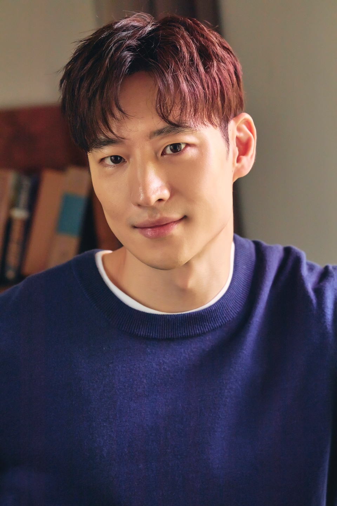

|  | |
| 출생 | 1984년 7월 4일 (38세) |
|---|---|
| 서울특별시 종로구 효자동 | |
| 국적 | 대한민국 |
| 본관 | 경주 이씨 (慶州 李氏)[1] |
| 신체 | 177cm ｜ b형 |
| mbti | entp[2] |
| 가족 | 부모님,누나 |
| 학력 | |
| 병역 |
|
| 종교 | 무종교 |
| 관련링크 | |
대한민국의 배우. 2011년 영화 《파수꾼》과 《고지전》으로 신인상을 휩쓸며 '괴물 신인'이란 타이틀로 이름을 알리기 시작했다.
영화로 데뷔했고 특히 충무로에서 많은 주목을 받은 만큼 드라마보다는 영화 출연작이 훨씬 많은 영화 주력 배우이다. 하지만 2016년 최고의 히트작《시그널》을 시작으로 2021년 높은 시청률을 기록한 《모범택시》, 작품성을 인정받은 웰메이드 드라마 《무브 투 헤븐》을 필모그래피에 추가시키며 드라마로도 활동 영역을 넓혀가고 있다.
1984년 7월 4일 서울특별시 종로구 효자동에서 태어났으며, 6살 때부터 의정부시에서 살았다. 연극영화과를 가려 했지만, 부모님의 반대로 고려대학교 세종캠퍼스에 입학하여 공학도의 길을 걸었다. 하지만 연기자의 꿈을 접지 못하고 2학년 때 자퇴한 후, 2008년 한국예술종합학교 연극원 연기과에 입학했다.[4] 근데, 한예종도 중퇴하여 최종 학력은 고교 졸업으로 남았다.[5]
2005년 연극 《바다제비》를 통해 배우의 생활을 시작했고 공식 데뷔작은 2006년 《진실 리트머스》(첫 단편) or 2008년 《약탈자들》(첫 장편)[6] 이다. 2009년 《친구 사이?》, 2010년 《김종욱 찾기》, 2010년 《세 자매》의 출연으로 연기력을 다졌고, 2010년 《파수꾼》과 2011년 《고지전》으로 자신의 존재를 충무로에 각인시켰다.
2011년은 이제훈의 필모그래피를 완전히 뒤바꾼 해이다.《파수꾼》과 《고지전》으로 연이어 주목받으면서[7] 그해 영화제의 신인상이란 신인상은 전부 이제훈으로 대동단결했다. 파수꾼 이제훈과 고지전 이제훈이 경합을 벌이는 상황까지 발생했다. 후보자 화면 두 칸을 차지한 이제훈의 뻘쭘한 미소가 포인트. 참고로 대종상과 청룡영화제에서는 《파수꾼》으로, 부일영화상과 영평상에서는 《고지전》으로 신인남우상을 거머쥐었다. 그야말로 충무로의 신데렐라라고 해도 과언이 아닐 정도. 이후로도 이제훈만큼의 임팩트를 남기며 스크린에 등장한 신인 남자배우는 찾아보기 어렵다.
2012년 영화 《건축학개론》으로 유명세를 타며 자리를 확고히 했다. 10살이나 어린 수지와 거의 동갑처럼 보일 만큼 어려 보이는 얼굴에 첫사랑에 걸맞은 풋풋한 연기로 대호평을 받았다. 이후 《분노의 윤리학》, 《점쟁이들》, 《파파로티》 등의 작품을 연이어 촬영하고는 군입대를 했다. 많은 작품을 찍어놓고 간 탓에 그가 의경복무를 시작한 후 한참이나 그가 입대한 사실을 모르는 사람들이 많았다. 제대 후 첫 영화인 《탐정 홍길동》으로 복귀해 143만 명 관객을 모았지만 손익분기점인 300만 명 동원에는 실패했다.
2016년 드라마 《시그널》에서 주인공 박해영 역을 맡아 열연했는데, 사실 초반에는 연기력에 대한 비판이 있었다. 목소리와 연기 톤이 과장되고 어색해서 캐릭터의 성향을 잘 소화하지 못하고 있다는 것. 반면 톤이 맞지 않는 등 연기력에 있어 논란의 여지가 있다는 것은 소수의 의견이라는 주장도 있었다. 논란 당시 페이스북 같은 데서 도막영상을 올려놓고 평가를 하는 경우가 보였는데, 앞뒤 전개 흐름의 맥락을 무시한 채 격앙된 감정신만 오려낸 상태에서의 평가 또한 문제의 소지가 있다. 다행히도 드라마 후반부에는 연기력 논란이 거의 사라졌다. 이후의 인터뷰를 보면 프로파일러라는 직업을 표현하려는 모습과 초반분량에서 후시녹음으로 대체되면서 결과적으로 어색하게 조금 겉도는 느낌이 되었다고 한다. 하지만 초반 이후 사연있는 프로파일러 박해영 역을 잘 소화해내 논란을 떨쳐내고 호평을 받았다.
기세를 몰아 2017년에는 신민아와 함께 《내일 그대와》에 출연했다. 시청률면에선 평균 1%대를 기록하여 아쉬움이 남았으나 신민아와의 케미와 연기합으로 마니아층이 모여 GV도 열리고 웹상에서는 케미 쩔었던 드라마 커플로 꾸준히 소환되고 있다. 다행히 2017년 영화 쪽에서 《박열》, 《아이 캔 스피크》가 큰 호평을 받고 흥행까지 하면서 《내일 그대와》 흥행의 부진을 말끔히 씻어냈다. 2018년에는 드라마 《여우각시별》에 출연. 동시간대 5개의 드라마가 경합하는 상황에서 최고시청률 9.8%를 기록. 연말에는 《여우각시별》로 SBS 연기대상에서 작품상과 최우수 연기상을 수상하였다. 시청률 두 자릿수를 찍지 못하고 막을 내린 것이 아쉽다는 목소리가 있었으나 장애라는 민감하고도 어려운 소재를 잘 풀어냈다는 호평을 받았다.
영화에서는 믿고 보는 배우로 불릴 만큼 흥행과 비평 둘 중 하나는 꼭 잡아왔지만 드라마에서의 실적은 《시그널》을 제외하면 아쉬운 편이다. 주연급으로 올라선 후 출연한 《패션왕》은 그야말로 흑역사다. 답이없는 대본과 연출 사이에서 고군분투하는 이제훈과 다른 배우들이 애잔할 지경이었다. 그래도 러브라인으로 엮인 신세경과의 케미가 좋아서 "가재커플"이라는 애칭까지 얻으며 많은 사랑을 받았다.
제대 후 첫 작품이자 한석규와의 두 번째 랑데부로 그 해 최고의 기대작 중 하나로 손꼽혔던 《비밀의 문》도 산으로 가는 대본[8]과 무리수 설정의 남발로 기대 이하의 성적을 거두었다.
《내일 그대와》는 이제훈의 첫 로맨스 드라마라는 점에서 많은 기대를 모으며 3.9%의 시청률로 순탄하게 출발했지만 미래와 현재를 오가는 어려운 스토리로 유입이 어려운 장르에, 재방송 편성이 매우 드물었을 뿐만 아니라 아쉬운 시간대 편성 등의 이유로 평균 1%대의 아쉬운 시청률로 막을 내리게 되었다. 하지만 신민아와의 사랑스러운 케미와 뛰어난 연기합으로 마니아층을 모으며 드라마 종영 후 감독과 스탭진 배우들이 모인 GV도 열리고 드라마가 끝난 후에도 계속 커뮤니티 등에 남주여주 케미 쩌는 드라마로 끊임없이 소환되는 등 마냥 저평가 하기엔 어렵다고 볼 수 있다.
《여우각시별》의 경우 시청률은 2018년도 드라마 중에서는 평타정도 됐고 뿌린 떡밥을 모두 회수하지 못했다는 아쉬움은 있었지만 작품적, 연기적으로 호평을 받고 작품상, 연기상도 수상하여 아쉬움을 달랠 수 있었다.
그리고 2021년, 3년 만의 드라마 복귀작 《모범택시》가 최고 시청률 16%를 돌파하며 또 하나의 드라마 히트작을 탄생시켰다. 극중 김도기 역을 맡아 다양한 부캐 연기로 호평 받으며 연기력을 입증했고 SBS 연기대상에서 최우수상을 수상했다. 같은 해 5월에 공개된 넷플릭스 오리지널 드라마 《무브 투 헤븐: 나는 유품정리사입니다》는 웰메이드 드라마라는 평과 함께 국제 시상식에서 작품상과 남우주연상을 수상하며 좋은 성과를 거두었다.
차기작 영화 《탈주》는 촬영이 완료되어 후반작업을 거쳐 2023년 개봉 예정이며, 드라마 《모범택시 2》는 2023년 2월 17일부터 SBS 금토 드라마로 방영을 한다.
영화 《명량》과 《한산: 용의 출현》의 후속작 《노량: 죽음의 바다》에 '젊은 광해' 역으로 출연하며 이 작품 또한 2023년 개봉 예정이다.
| 개봉 연도 | 제목 | 배역 | 관객수 | 비고 | ||||||||||
|---|---|---|---|---|---|---|---|---|---|---|---|---|---|---|
| 2006 | 진실리트머스 | 신우 | 단편영화 | |||||||||||
| 2007년 | placebo | - | ||||||||||||
| kiss kiss kiss | 선욱 | |||||||||||||
| 평화의 땅 | - | |||||||||||||
| 영화처럼 사랑해도 되나요 | 제훈 | |||||||||||||
| 밤은 그들만의 시간 | 선욱 | |||||||||||||
| 2008년 | 담배 피우기 좋은날 | 은호 | ||||||||||||
| 아,맨 | 히어로 | |||||||||||||
| 숭고한 방학 | 강영운 | |||||||||||||
| 2009년 | 언어생활 | 경민 | ||||||||||||
| 겨울이 온다 | 제훈 | |||||||||||||
| 약탈자들 | 어린 상태 | 1천명 | 독립영화 | |||||||||||
| 친구 사이? | 이석 | 5천명 | ||||||||||||
| 귀(鬼) | 김세영 | 1만명 | ||||||||||||
시청률은 최고 시청률 기준.
2011년 퀴어 영화감독 김조광수에게 SNS에서 디스를 당한 적 있다. 자신의 영화 친구 사이?에 주연으로 출연했던 이제훈에게 퀴어 영화 카메오로 출연을 부탁했는데, 게이 이미지가 덧씌워지는 게 싫다고 거절당했다는 것. # 자세한 내용은 김조광수 참고. 김조광수는 이후에도 감정이 남았는지 다른 인터뷰에서도 이제훈에 대해 언급했다. 실제로 이제훈은 해당 작품의 주연 당시에는 신인이라 매체 홍보도 하고 '성소수자에 대해 이해하게 됐다'고 인터뷰까지 했으나#, 저런 이유로 출연을 거절하고 스타덤에 오른 이후부터 작품 언급을 꺼리고 필모에서 지워버리는 듯한 인상을 줘서 구설수에 올랐다. 하지만 이제훈은 실제로 단편영화까지 포함하면 게이 역할을 무려 3번이나 맡았기 때문에 호모포비아일 가능성은 극히 적고, 이미지 고착화를 우려해서 충분히 거절할 수 있던 상황이었음에도 이제훈의 인성에 대한 여지를 남기며 공개적으로 디스한 김조광수에 대한 비판도 많다.[21]